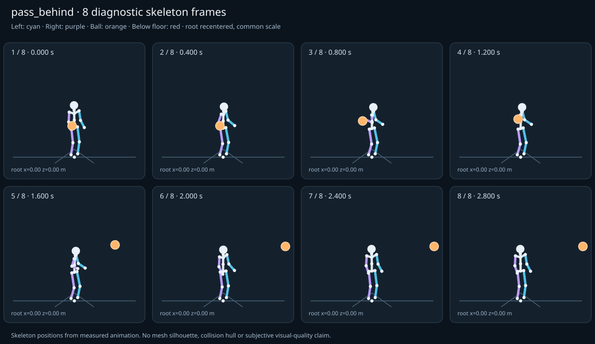

כל הקליפים · תצוגת התנועה · JSON מקורי
ציון 96.1 · כיסוי 100%
נתוני motion-qa-v1 המקוריים; עיצוב הדוח בלבד הותאם לחבילה. נקודות הסוליה נמדדות בתרחיש שחקן חיצוני מוצהר; Root בנכס נשאר קבוע.

| מדד | מצב | ערך | ציון | ראיות |
|---|---|---|---|---|
| החלקת רגליים | ירוק | 0.000047 | 99.91 | ראיות המדידה{
"coordinateSpace": "native GLB plus explicitly declared external actor position and heading, applied once",
"supportSource": "declared",
"windows": 2,
"samples": 674,
"maxDriftMeters": 0.000079,
"p95SpeedMetersPerSecond": 0.001967,
"worst": {
"bone": "RightFoot",
"t": 0.35,
"start": 0,
"end": 2.8,
"driftMeters": 0.000079
}
} |
| חדירה לרצפה | ירוק | 0.000028 | 99.89 | ראיות המדידה{
"samples": 6740,
"floorY": 0,
"probeKind": "declared sole probes plus skeletal joint centers (no mesh surfaces)",
"maxDepthMeters": 0.000048,
"worst": {
"t": 0.316667,
"bone": "LeftFoot",
"depthMeters": 0.000048,
"y": -0.000048
}
} |
| קפיצות פוזה | ירוק | 0.947916 | 81.04 | ראיות המדידה{
"adjacentPairs": 336,
"observations": 5712,
"maxDegrees60Hz": 14.218746,
"maxMarkerStepHeight60Hz": 0.029064,
"maxRootStepHeight60Hz": 0,
"worst": {
"ratio": 0.9479163833976327,
"t": 0.916667,
"previousTime": 0.908333,
"bone": "RightArm",
"markerStepHeight60Hz": 0,
"degrees60Hz": 14.218746
}
} |
| חריגות אנטומיות | ירוק | 0 | 100 | ראיות המדידה{
"testedFrames": 337,
"affectedFrames": 0,
"checks": 5729,
"maxLimbFlexionDegrees": 111.541865,
"maxRelativeSegmentLengthChange": 0,
"hingeDirectionChecked": true,
"axialTwistChecked": false,
"violations": []
} |
| מגע בכדור | ירוק | 0.000983 | 98.69 | ראיות המדידה{
"radiusMeters": 0.12,
"samples": 49,
"missed": [],
"contacts": [
{
"t": 0.95,
"bone": "RightHand",
"gapMeters": 0.001662,
"signedGapMeters": -0.001662,
"centerDistanceMeters": 0.118338,
"contactPoint": [
-0.125199,
1.001393,
-0.07644
],
"ballCenter": [
-0.125694,
1,
-0.194769
],
"declaredLocalPoint": true
},
{
"t": 0.916667,
"bone": "RightHand",
"gapMeters": 0.001594,
"signedGapMeters": -0.001594,
"centerDistanceMeters": 0.118406,
"contactPoint": [
-0.158022,
1.001399,
-0.065306
],
"ballCenter": [
-0.158898,
1,
-0.183701
],
"declaredLocalPoint": true
},
{
"t": 0.941667,
"bone": "RightHand",
"gapMeters": 0.001259,
"signedGapMeters": -0.001259,
"centerDistanceMeters": 0.118741,
"contactPoint": [
-0.134401,
1.001037,
-0.073015
],
"ballCenter": [
-0.134748,
1,
-0.191751
],
"declaredLocalPoint": true
},
{
"t": 0.958333,
"bone": "RightHand",
"gapMeters": 0.001236,
"signedGapMeters": -0.001236,
"centerDistanceMeters": 0.118764,
"contactPoint": [
-0.115834,
1.001051,
-0.079165
],
"ballCenter": [
-0.116228,
1,
-0.197924
],
"declaredLocalPoint": true
},
{
"t": 0.925,
"bone": "RightHand",
"gapMeters": 0.0012,
"signedGapMeters": -0.0012,
"centerDistanceMeters": 0.1188,
"contactPoint": [
-0.150703,
1.001049,
-0.067407
],
"ballCenter": [
-0.151398,
1,
-0.186201
],
"declaredLocalPoint": true
},
{
"t": 0.908333,
"bone": "RightHand",
"gapMeters": 0.001192,
"signedGapMeters": -0.001192,
"centerDistanceMeters": 0.118808,
"contactPoint": [
-0.165176,
1.001046,
-0.0626
],
"ballCenter": [
-0.165792,
1,
-0.181403
],
"declaredLocalPoint": true
},
{
"t": 0.983333,
"bone": "RightHand",
"gapMeters": 0.001125,
"signedGapMeters": -0.001125,
"centerDistanceMeters": 0.118875,
"contactPoint": [
-0.08605,
1.000554,
-0.089127
],
"ballCenter": [
-0.085996,
1,
-0.208001
],
"declaredLocalPoint": true
},
{
"t": 0.883333,
"bone": "RightHand",
"gapMeters": 0.000906,
"signedGapMeters": -0.000906,
"centerDistanceMeters": 0.119094,
"contactPoint": [
-0.181394,
1.000536,
-0.056719
],
"ballCenter": [
-0.18258,
1,
-0.175807
],
"declaredLocalPoint": true
},
{
"t": 0.975,
"bone": "RightHand",
"gapMeters": 0.000856,
"signedGapMeters": -0.000856,
"centerDistanceMeters": 0.119144,
"contactPoint": [
-0.096335,
1.000408,
-0.085419
],
"ballCenter": [
-0.096313,
1,
-0.204562
],
"declaredLocalPoint": true
},
{
"t": 0.991667,
"bone": "RightHand",
"gapMeters": 0.000831,
"signedGapMeters": -0.000831,
"centerDistanceMeters": 0.119169,
"contactPoint": [
-0.075593,
1.000423,
-0.092321
],
"ballCenter": [
-0.075535,
1,
-0.211488
],
"declaredLocalPoint": true
},
{
"t": 0.891667,
"bone": "RightHand",
"gapMeters": 0.000685,
"signedGapMeters": -0.000685,
"centerDistanceMeters": 0.119315,
"contactPoint": [
-0.17675,
1.000401,
-0.058138
],
"ballCenter": [
-0.177651,
1,
-0.17745
],
"declaredLocalPoint": true
},
{
"t": 0.875,
"bone": "RightHand",
"gapMeters": 0.000675,
"signedGapMeters": -0.000675,
"centerDistanceMeters": 0.119325,
"contactPoint": [
-0.185958,
1.000402,
-0.055068
],
"ballCenter": [
-0.186832,
1,
-0.174389
],
"declaredLocalPoint": true
},
{
"t": 1.016667,
"bone": "RightHand",
"gapMeters": 0.000647,
"signedGapMeters": -0.000647,
"centerDistanceMeters": 0.119353,
"contactPoint": [
-0.044636,
1.000001,
-0.102648
],
"ballCenter": [
-0.044004,
1,
-0.221999
],
"declaredLocalPoint": true
},
{
"t": 1.008333,
"bone": "RightHand",
"gapMeters": 0.000495,
"signedGapMeters": -0.000495,
"centerDistanceMeters": 0.119505,
"contactPoint": [
-0.054911,
0.999998,
-0.099008
],
"ballCenter": [
-0.054465,
1,
-0.218512
],
"declaredLocalPoint": true
},
{
"t": 1.025,
"bone": "RightHand",
"gapMeters": 0.000476,
"signedGapMeters": -0.000476,
"centerDistanceMeters": 0.119524,
"contactPoint": [
-0.034189,
1.000004,
-0.105915
],
"ballCenter": [
-0.033687,
1,
-0.225438
],
"declaredLocalPoint": true
},
{
"t": 0.85,
"bone": "RightHand",
"gapMeters": 0.000456,
"signedGapMeters": -0.000456,
"centerDistanceMeters": 0.119544,
"contactPoint": [
-0.194551,
1.000087,
-0.051906
],
"ballCenter": [
-0.195666,
1,
-0.171445
],
"declaredLocalPoint": true
},
{
"t": 1.15,
"bone": "RightHand",
"gapMeters": 0.00036,
"signedGapMeters": 0.00036,
"centerDistanceMeters": 0.12036,
"contactPoint": [
0.064516,
0.999985,
-0.138201
],
"ballCenter": [
0.065666,
1,
-0.258555
],
"declaredLocalPoint": true
},
{
"t": 0.858333,
"bone": "RightHand",
"gapMeters": 0.000351,
"signedGapMeters": -0.000351,
"centerDistanceMeters": 0.119649,
"contactPoint": [
-0.192491,
1.000065,
-0.05257
],
"ballCenter": [
-0.193351,
1,
-0.172216
],
"declaredLocalPoint": true
},
{
"t": 0.841667,
"bone": "RightHand",
"gapMeters": 0.000334,
"signedGapMeters": -0.000334,
"centerDistanceMeters": 0.119666,
"contactPoint": [
-0.196597,
1.000065,
-0.051201
],
"ballCenter": [
-0.197405,
1,
-0.170865
],
"declaredLocalPoint": true
},
{
"t": 1.116667,
"bone": "RightHand",
"gapMeters": 0.000323,
"signedGapMeters": 0.000323,
"centerDistanceMeters": 0.120323,
"contactPoint": [
0.051197,
0.999929,
-0.133878
],
"ballCenter": [
0.05258,
1,
-0.254193
],
"declaredLocalPoint": true
}
],
"contactDetailsTruncated": true,
"coordinateSpace": "native GLB plus explicitly declared external actor position and heading, applied once"
} |
| כניסה ויציאה מול המתנה | ירוק | 0.004035 | 99.92 | ראיות המדידה{
"entry": {
"ratio": 0.004034998791814798,
"t": 0,
"idleTime": 3.966667,
"markers": 17,
"rmsPositionHeight": 0.000101,
"rmsRotationDegrees": 0.019375,
"rmsVelocityHeightPerSecond": 0.003026,
"velocityEvaluated": true
},
"exit": {
"ratio": 0.0040349987918152095,
"t": 2.8,
"idleTime": 3.966667,
"markers": 17,
"rmsPositionHeight": 0.000101,
"rmsRotationDegrees": 0.019375,
"rmsVelocityHeightPerSecond": 0.003026,
"velocityEvaluated": true
},
"worstEndpoint": "exit",
"alignment": "horizontal root translation; raw asset poses used when provided"
} |
| מהירות גוף מול צעדים | לא חל | — | — | ראיות המדידה{} |
| סימטריה | ירוק | 0 | 100 | ראיות המדידה{
"mode": "structural",
"modeSource": "declared",
"structuralMismatch": 0,
"segments": [
{
"segment": "Arm-ForeArm",
"mismatch": 0
},
{
"segment": "ForeArm-Hand",
"mismatch": 0
},
{
"segment": "UpLeg-Leg",
"mismatch": 0
},
{
"segment": "Leg-Foot",
"mismatch": 0
}
],
"motionRmsHeight": null,
"worstMotion": null,
"bilateralPoseRmsHeightUnscored": 0.089085,
"note": "One-sided authored actions are checked for structural symmetry only."
} |